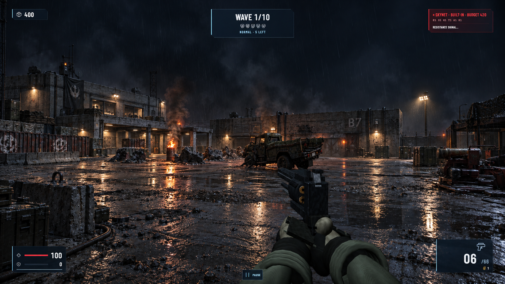
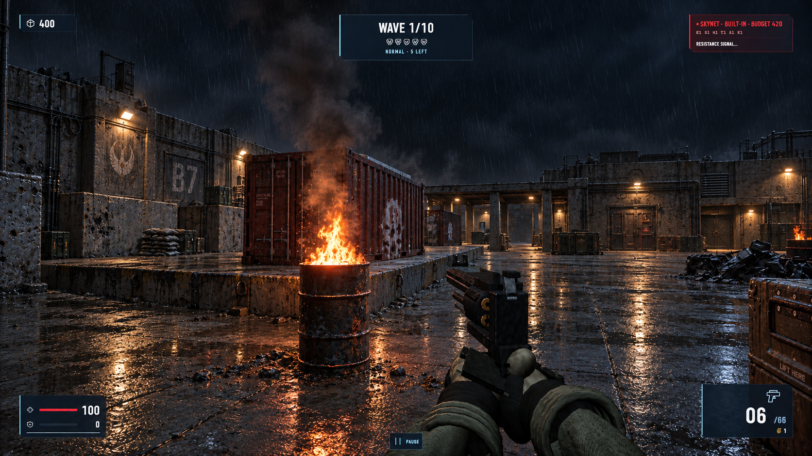
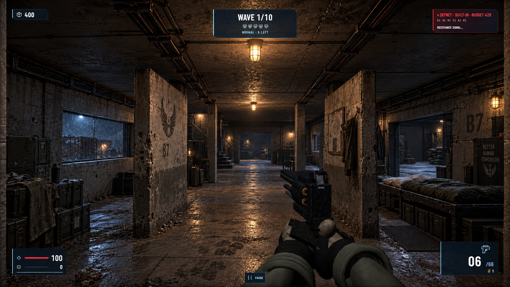
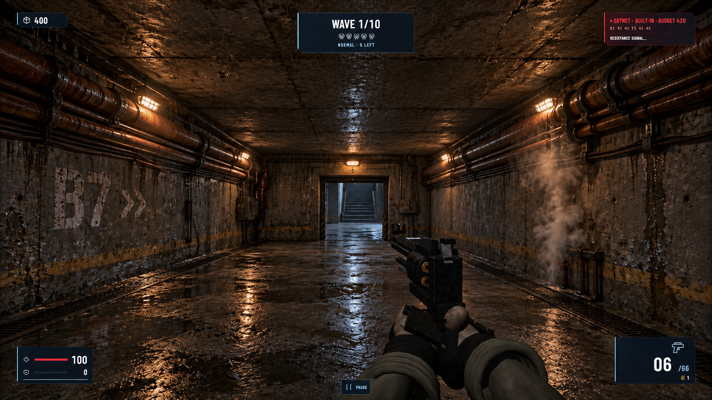
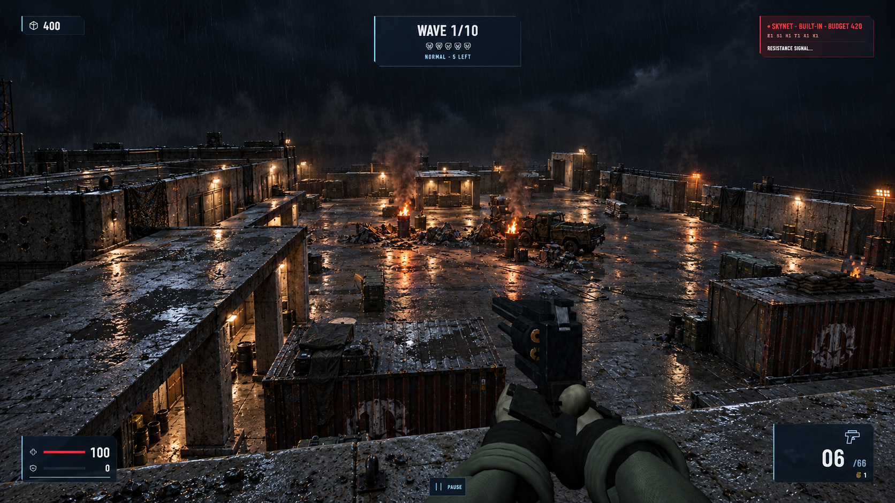

Courtyard / resistance stronghold
01 / 05Ground-level diagonal across the central combat yard toward the command building and eastern structures.


Generation prompt + saved POV
Player feet: [-12, 0, -17] · Look at: [5, 2, 18] · FOV: 72° · Eye height: 1.65 m
Use case: sketch-to-render. Asset type: ambitious environment art target for the playable Terminator: Bunker 7 FPS scene, not a poster. Primary request: transform this crude current gameplay screenshot into a remarkably convincing AAA real-time Future War environment. Treat the input almost as a depth/blockout map: its material quality and detail are disposable, its camera and spatial structure are binding. Composition invariants: retain the exact 16:9 image, 72-degree player-eye perspective, horizon, vanishing points, major building footprints, doorway positions, floor heights, cover silhouettes and screen-space placement of the truck, containers and other major objects visible in THIS image. Maintain existing clear traversable routes and sightlines. Never substitute a different map or a cinematic camera. Preserve the input weapon, hands, and HUD in their exact positions and shapes; focus the transformation on the environment. Shared visual direction: a rain-soaked, battle-scarred resistance compound in the Terminator Future War. Architecturally credible reinforced concrete, oxidized gunmetal, faded military olive, localized russet corrosion. Cold moonlit blue-gray ambient light, warm amber practical fixtures and barrel fires, sparse purposeful red warning strips. Strong but readable shadow shapes; realistic exposure with no crushed black objects. Consistent scale, materials, atmosphere and time of night across all five viewpoints. Ambition: turn primitive slabs into richly articulated military-industrial architecture with structural columns, chipped edges, exposed aggregate and rebar at damaged corners, repaired plates, inset doors and windows, wiring conduits and grounded joints. Transform flat floors into worn concrete with expansion joints, wetness variation, shallow selective puddles, oily contact stains and localized grit. Physically plausible light falloff, contact shadows, soft reflected light, wet reflections, atmospheric depth and restrained bloom. Every prop should feel heavy, correctly scaled, weathered by the same history and integrated into the ground. Integrate detail around existing forms; avoid uniformly noisy surfaces. Boundaries: preserve map geometry and gameplay readability, but pursue a dramatic step-change in material quality, lighting, architectural detail and environmental storytelling. No new people or enemies, no new foreground obstructions, no mountains or unrelated skyline, no fantasy, no neon cyberpunk saturation, no exaggerated lens distortion, no shallow depth of field, no motion blur. No extra UI, titles, watermarks or concept-art borders. Output one full-frame polished game-render target, not a before/after collage. View-specific request: Image 1 is the structural edit target. This is the broad courtyard approach. Preserve the left rear two-story command block and its low colonnade, left perimeter cargo/wall band, central rubble divide, middle-right truck and right-edge generator. Turn this into a coherent fortified resistance motor yard: convincing blast-worn concrete, utility fixtures following the existing architecture, aged truck metal and rubber, natural rubble profiles in exactly the existing cover zones, low realistic flames and smoke replacing square particles, wet ground planes catching amber firelight and cold sky. Keep the large night sky as atmospheric negative space, with faint layered smoke rather than inventing dominating buildings. The forward route must remain open. Preserve all HUD and player weapon pixels as closely as possible.
Cargo approach / eastern flank
02 / 05Ground-level approach to the container dock, with cover, cargo silhouettes and the barracks beyond.


Generation prompt + saved POV
Player feet: [15, 0, -19] · Look at: [25, 2, 7] · FOV: 72° · Eye height: 1.65 m
Use case: sketch-to-render. Asset type: ambitious environment art target for the playable Terminator: Bunker 7 FPS scene, not a poster. Primary request: transform this crude current gameplay screenshot into a remarkably convincing AAA real-time Future War environment. Treat the input almost as a depth/blockout map: its material quality and detail are disposable, its camera and spatial structure are binding. Composition invariants: retain the exact 16:9 image, 72-degree player-eye perspective, horizon, vanishing points, major building footprints, doorway positions, floor heights, cover silhouettes and screen-space placement of the truck, containers and other major objects visible in THIS image. Maintain existing clear traversable routes and sightlines. Never substitute a different map or a cinematic camera. Preserve the input weapon, hands, and HUD in their exact positions and shapes; focus the transformation on the environment. Shared visual direction: a rain-soaked, battle-scarred resistance compound in the Terminator Future War. Architecturally credible reinforced concrete, oxidized gunmetal, faded military olive, localized russet corrosion. Cold moonlit blue-gray ambient light, warm amber practical fixtures and barrel fires, sparse purposeful red warning strips. Strong but readable shadow shapes; realistic exposure with no crushed black objects. Consistent scale, materials, atmosphere and time of night across all five viewpoints. Ambition: turn primitive slabs into richly articulated military-industrial architecture with structural columns, chipped edges, exposed aggregate and rebar at damaged corners, repaired plates, inset doors and windows, wiring conduits and grounded joints. Transform flat floors into worn concrete with expansion joints, wetness variation, shallow selective puddles, oily contact stains and localized grit. Physically plausible light falloff, contact shadows, soft reflected light, wet reflections, atmospheric depth and restrained bloom. Every prop should feel heavy, correctly scaled, weathered by the same history and integrated into the ground. Integrate detail around existing forms; avoid uniformly noisy surfaces. Boundaries: preserve map geometry and gameplay readability, but pursue a dramatic step-change in material quality, lighting, architectural detail and environmental storytelling. No new people or enemies, no new foreground obstructions, no mountains or unrelated skyline, no fantasy, no neon cyberpunk saturation, no exaggerated lens distortion, no shallow depth of field, no motion blur. No extra UI, titles, watermarks or concept-art borders. Output one full-frame polished game-render target, not a before/after collage. Input roles: Image 1 is the structural edit target and controls ALL geometry, framing, weapon and HUD. Image 2 is ONLY a style/material/lighting consistency reference from another angle of the same map; never copy its camera or layout. View-specific request: Keep this exact cargo-flank view: red freight container on the raised loading slab left of center; burning barrel in the near left-center; colonnade and blank low structures beyond; crate cropped at right; open path on the right. Give the container heavy corrugated steel with aged paint and believable corner fittings, loading platform worn chipped concrete with drainage and curb joints, barrel natural flame and smoke rather than voxel particles. Articulate existing building silhouettes with grounded military industrial details, conduit and sheltered utility lights. Preserve the barrel's location and scale, but replace the tall column of square particles with realistic rising smoke. Do not add new foreground obstacles.
Barracks / inhabited shelter
03 / 05Standing inside the barracks, looking along the occupied room toward its stairs.


Generation prompt + saved POV
Player feet: [36, 0, 5.5] · Look at: [36, 1.65, 22] · FOV: 72° · Eye height: 1.65 m
Use case: sketch-to-render. Asset type: ambitious environment art target for the playable Terminator: Bunker 7 FPS scene, not a poster. Primary request: transform this crude current gameplay screenshot into a remarkably convincing AAA real-time Future War environment. Treat the input almost as a depth/blockout map: its material quality and detail are disposable, its camera and spatial structure are binding. Composition invariants: retain the exact 16:9 image, 72-degree player-eye perspective, horizon, vanishing points, major building footprints, doorway positions, floor heights, cover silhouettes and screen-space placement of the truck, containers and other major objects visible in THIS image. Maintain existing clear traversable routes and sightlines. Never substitute a different map or a cinematic camera. Preserve the input weapon, hands, and HUD in their exact positions and shapes; focus the transformation on the environment. Shared visual direction: a rain-soaked, battle-scarred resistance compound in the Terminator Future War. Architecturally credible reinforced concrete, oxidized gunmetal, faded military olive, localized russet corrosion. Cold moonlit blue-gray ambient light, warm amber practical fixtures and barrel fires, sparse purposeful red warning strips. Strong but readable shadow shapes; realistic exposure with no crushed black objects. Consistent scale, materials, atmosphere and time of night across all five viewpoints. Ambition: turn primitive slabs into richly articulated military-industrial architecture with structural columns, chipped edges, exposed aggregate and rebar at damaged corners, repaired plates, inset doors and windows, wiring conduits and grounded joints. Transform flat floors into worn concrete with expansion joints, wetness variation, shallow selective puddles, oily contact stains and localized grit. Physically plausible light falloff, contact shadows, soft reflected light, wet reflections, atmospheric depth and restrained bloom. Every prop should feel heavy, correctly scaled, weathered by the same history and integrated into the ground. Integrate detail around existing forms; avoid uniformly noisy surfaces. Boundaries: preserve map geometry and gameplay readability, but pursue a dramatic step-change in material quality, lighting, architectural detail and environmental storytelling. No new people or enemies, no new foreground obstructions, no mountains or unrelated skyline, no fantasy, no neon cyberpunk saturation, no exaggerated lens distortion, no shallow depth of field, no motion blur. No extra UI, titles, watermarks or concept-art borders. Output one full-frame polished game-render target, not a before/after collage. Input roles: Image 1 is the structural edit target and controls ALL geometry, framing, weapon and HUD. Image 2 is ONLY a style/material/lighting consistency reference from another angle of the same map; never copy its camera or layout. View-specific request: Keep this exact standing interior view: low flat ceiling, long room, two broad partition panels and narrower posts flanking the central aisle, left rectangular window, right opening with low rectangular object, rear stair on the left of the far doorway. Transform into an inhabited resistance barracks with battered plaster-over-concrete, reinforced pillars, thin cable trays along the ceiling, caged practical lamps and cold moonlight from existing windows. Existing rectangular low object can become a field bunk; add tightly wall-mounted storage and folded textiles in existing side bays only. Floor worn and dusty with damp tracked-in footprints near openings, not flooded. Preserve all wall openings, stair position, ceiling height and open central route. Same grounded materials and amber practical lighting as Image 2, adjusted naturally for an interior.
Service trench / underground route
04 / 05Standing on the sunken service floor, looking along the long maintenance route.


Generation prompt + saved POV
Player feet: [-36, -3.5, -12.5] · Look at: [-35.7, -1.85, 10] · FOV: 72° · Eye height: 1.65 m
Use case: sketch-to-render. Asset type: ambitious environment art target for the playable Terminator: Bunker 7 FPS scene, not a poster. Primary request: transform this crude current gameplay screenshot into a remarkably convincing AAA real-time Future War environment. Treat the input almost as a depth/blockout map: its material quality and detail are disposable, its camera and spatial structure are binding. Composition invariants: retain the exact 16:9 image, 72-degree player-eye perspective, horizon, vanishing points, major building footprints, doorway positions, floor heights, cover silhouettes and screen-space placement of the truck, containers and other major objects visible in THIS image. Maintain existing clear traversable routes and sightlines. Never substitute a different map or a cinematic camera. Preserve the input weapon, hands, and HUD in their exact positions and shapes; focus the transformation on the environment. Shared visual direction: a rain-soaked, battle-scarred resistance compound in the Terminator Future War. Architecturally credible reinforced concrete, oxidized gunmetal, faded military olive, localized russet corrosion. Cold moonlit blue-gray ambient light, warm amber practical fixtures and barrel fires, sparse purposeful red warning strips. Strong but readable shadow shapes; realistic exposure with no crushed black objects. Consistent scale, materials, atmosphere and time of night across all five viewpoints. Ambition: turn primitive slabs into richly articulated military-industrial architecture with structural columns, chipped edges, exposed aggregate and rebar at damaged corners, repaired plates, inset doors and windows, wiring conduits and grounded joints. Transform flat floors into worn concrete with expansion joints, wetness variation, shallow selective puddles, oily contact stains and localized grit. Physically plausible light falloff, contact shadows, soft reflected light, wet reflections, atmospheric depth and restrained bloom. Every prop should feel heavy, correctly scaled, weathered by the same history and integrated into the ground. Integrate detail around existing forms; avoid uniformly noisy surfaces. Boundaries: preserve map geometry and gameplay readability, but pursue a dramatic step-change in material quality, lighting, architectural detail and environmental storytelling. No new people or enemies, no new foreground obstructions, no mountains or unrelated skyline, no fantasy, no neon cyberpunk saturation, no exaggerated lens distortion, no shallow depth of field, no motion blur. No extra UI, titles, watermarks or concept-art borders. Output one full-frame polished game-render target, not a before/after collage. Input roles: Image 1 is the structural edit target and controls ALL geometry, framing, weapon and HUD. Image 2 is ONLY a style/material/lighting consistency reference from another angle of the same map; never copy its camera or layout. View-specific request: Keep this exact service-route perspective: flat low ceiling, paired long pipes along both upper walls, wide unobstructed floor, central doorway and distant stair beyond, steam at right. Turn this into a remarkably believable underground utility passage: cast concrete with form-tie marks, damp seams, mineral runoff and repaired fractures; oxidized steel pipes with flanges, bracket supports, valves close against walls; cable runs and caged maintenance lighting following existing pipe direction. A recessed drainage channel, selective puddles, soft steam lit by restrained warm lights and a colder exit. Preserve doorway silhouette and location, corridor width, flat ceiling and vanishing point. No arched tunnel, no new side doors, no hallway clutter.
Barracks roof / battlefield overview
05 / 05Standing on the stair-accessible barracks roof, looking across the dock and central yard. Eye height remains 1.65 m above the roof.


Generation prompt + saved POV
Player feet: [31.6, 6.4, 6] · Look at: [-6, 1, 0] · FOV: 72° · Eye height: 1.65 m
Use case: sketch-to-render. Asset type: ambitious environment art target for the playable Terminator: Bunker 7 FPS scene, not a poster. Primary request: transform this crude current gameplay screenshot into a remarkably convincing AAA real-time Future War environment. Treat the input almost as a depth/blockout map: its material quality and detail are disposable, its camera and spatial structure are binding. Composition invariants: retain the exact 16:9 image, 72-degree player-eye perspective, horizon, vanishing points, major building footprints, doorway positions, floor heights, cover silhouettes and screen-space placement of the truck, containers and other major objects visible in THIS image. Maintain existing clear traversable routes and sightlines. Never substitute a different map or a cinematic camera. Preserve the input weapon, hands, and HUD in their exact positions and shapes; focus the transformation on the environment. Shared visual direction: a rain-soaked, battle-scarred resistance compound in the Terminator Future War. Architecturally credible reinforced concrete, oxidized gunmetal, faded military olive, localized russet corrosion. Cold moonlit blue-gray ambient light, warm amber practical fixtures and barrel fires, sparse purposeful red warning strips. Strong but readable shadow shapes; realistic exposure with no crushed black objects. Consistent scale, materials, atmosphere and time of night across all five viewpoints. Ambition: turn primitive slabs into richly articulated military-industrial architecture with structural columns, chipped edges, exposed aggregate and rebar at damaged corners, repaired plates, inset doors and windows, wiring conduits and grounded joints. Transform flat floors into worn concrete with expansion joints, wetness variation, shallow selective puddles, oily contact stains and localized grit. Physically plausible light falloff, contact shadows, soft reflected light, wet reflections, atmospheric depth and restrained bloom. Every prop should feel heavy, correctly scaled, weathered by the same history and integrated into the ground. Integrate detail around existing forms; avoid uniformly noisy surfaces. Boundaries: preserve map geometry and gameplay readability, but pursue a dramatic step-change in material quality, lighting, architectural detail and environmental storytelling. No new people or enemies, no new foreground obstructions, no mountains or unrelated skyline, no fantasy, no neon cyberpunk saturation, no exaggerated lens distortion, no shallow depth of field, no motion blur. No extra UI, titles, watermarks or concept-art borders. Output one full-frame polished game-render target, not a before/after collage. Input roles: Image 1 is the structural edit target and controls ALL geometry, framing, weapon and HUD. Image 2 is ONLY a style/material/lighting consistency reference from another angle of the same map; never copy its camera or layout. View-specific request: Keep this exact downward-looking PLAYER standing view from the accessible barracks roof. Preserve foreground roof parapet, left long colonnade/low building, cargo container immediately below center-left and another at right, central rubble line, truck and barrel positions, perimeter walls and distant gate. It is a 1.65m eye-height standing player on a 6.4m roof, not a drone. Make the same compound from Image 2 recognizable from its opposite side: strongly articulated worn concrete, repaired steel cladding, believable cover debris, natural barrel smoke, practical lights attached to existing structures, wet yard and selective amber reflections. Add rich small-scale roof surface detail and realistic coping joints without increasing the parapet height. Preserve the broad open combat lanes. No new towers or additional large buildings.